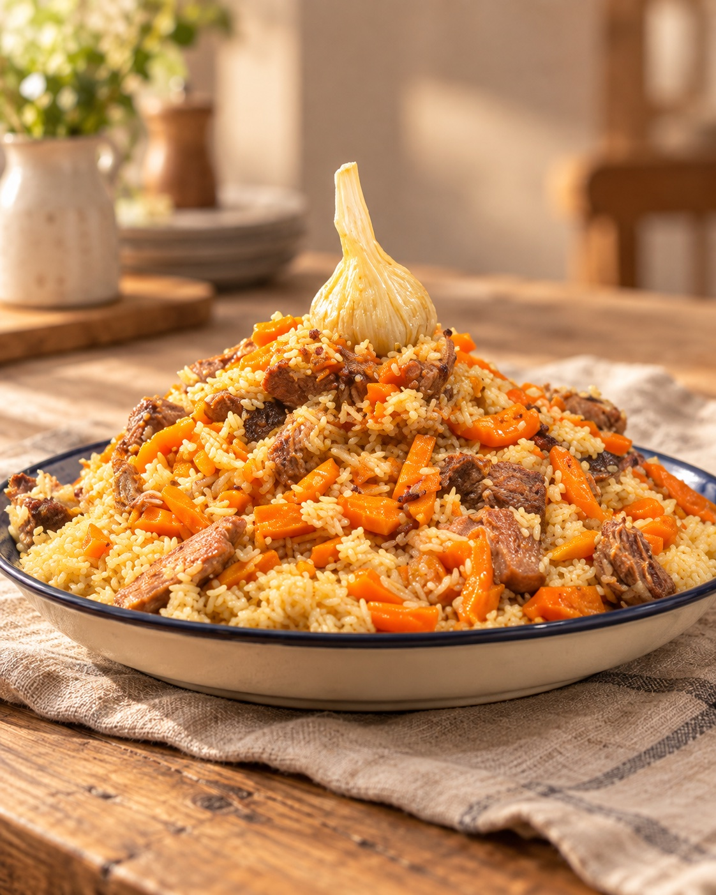

Großer Topf. Gemeinsam genießen.
Aus dem Kazan
Unsere Rezepte für deinen 12- oder 16-L-Kazan. Wähle deine Größe und entdecke die passenden Mengen für die große Runde.

Welcher Kazan steht bei dir?
Für diese Größe gibt es noch kein Rezept.